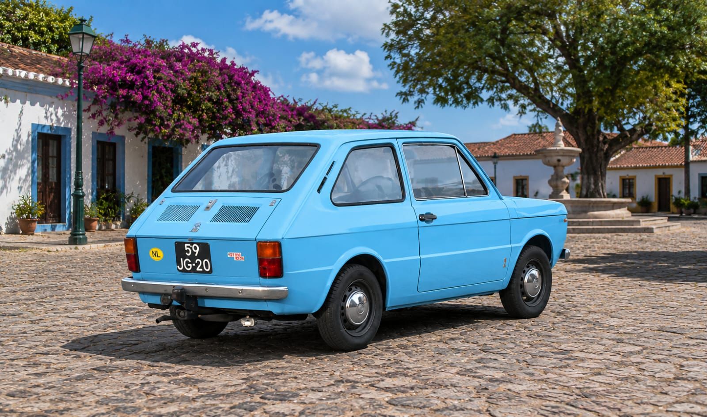

El Fiat que cambió todo: la primera aventura automovilística de Javi
ML- “Tenía apenas 17 años, no tenía mucha experiencia, pero sí algo claro: quería tener su propio auto.”21 mayo 2026 | 17:00 pm

El primer auto muchas veces implica sacrificios. Para Javi, la historia comenzó a los 17 años, cuando decidió dejar atrás su motocicleta Zanella Due 110 para cumplir el sueño de tener un Fiat 133.
No tenía registro ni demasiada experiencia manejando, pero sí las ganas de vivir esa sensación que todo amante de los coches recuerda para siempre: tener su propio auto por primera vez.
El intercambio se hizo a mano, sin dinero de por medio. Por un lado dejaba atrás la moto que usaba todos los días y, por el otro, recibía un pequeño Fiat 133 que rápidamente se convirtió en una nueva aventura sobre ruedas.
Durante la primera semana todo fue emoción. Salidas improvisadas, vueltas con amigos y esa sensación de libertad que solo da el primer coche. No importaba que fuera viejo, pequeño o sencillo; para alguien de 17 años significaba muchísimo más que un vehículo.
A los pocos días, el Fiat comenzó a presentar problemas mecánicos importantes y finalmente terminó rompiéndose la caja de cambios. Sin el dinero suficiente para repararlo y con pocas posibilidades de recuperarlo, Javi tomó una decisión difícil: vender el coche desarmado.
Aunque la experiencia duró poco tiempo, el recuerdo quedó marcado para siempre. Porque muchas veces el primer auto no es el más rápido, ni el más bonito, ni el más fiable… pero sí el más inolvidable.
¿Qué es la caja de cambios y qué ocurre cuando se daña?
La caja de cambios es una de las piezas más importantes de cualquier vehículo. Su función es transmitir la potencia del motor hacia las ruedas mediante diferentes marchas o velocidades, permitiendo que el coche avance correctamente y adapte su fuerza según la situación.
Cuando una caja de cambios comienza a fallar, pueden aparecer síntomas como dificultad para meter cambios, ruidos metálicos, vibraciones, pérdida de potencia o incluso que el auto deje de moverse completamente.
Repararla puede resultar costoso, especialmente en coches antiguos donde muchas piezas son difíciles de conseguir. En algunos casos sí es viable reemplazarla o reconstruirla, aunque muchas personas terminan optando por vender el vehículo.

Consejos para comprar tu primer auto
Comprar el primer coche es una experiencia emocionante, pero también puede convertirse en un problema si no se toman las precauciones necesarias. Antes de comprar, es importante revisar el estado mecánico del vehículo, verificar que toda la documentación esté al día e investigar el costo de los repuestos y el mantenimiento. Además, siempre es mejor priorizar un coche confiable antes que uno rápido o llamativo, y tener paciencia para no tomar una decisión impulsiva solo por la emoción del momento.
Ficha técnica — Fiat 133
Motor: 4 cilindros en línea, trasero longitudinal
Cilindrada: 843 cc
Potencia: 37 CV
Torque: 54 Nm
Transmisión: Manual de 4 velocidades
Tracción: Trasera
Sistema de frenos: Tambor en las cuatro ruedas
Refrigeración: Por agua
Peso: 690 kg
Capacidad del tanque: 30 litros
Velocidad máxima: 125 km/h